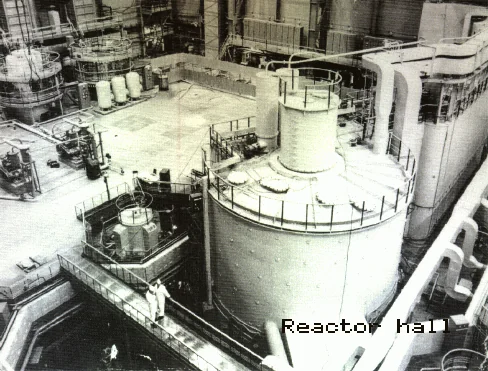
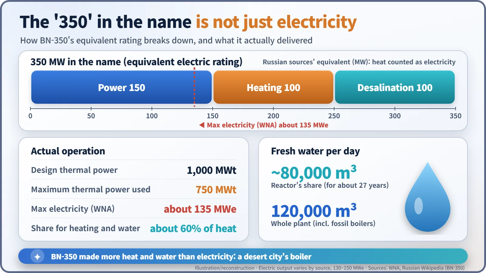
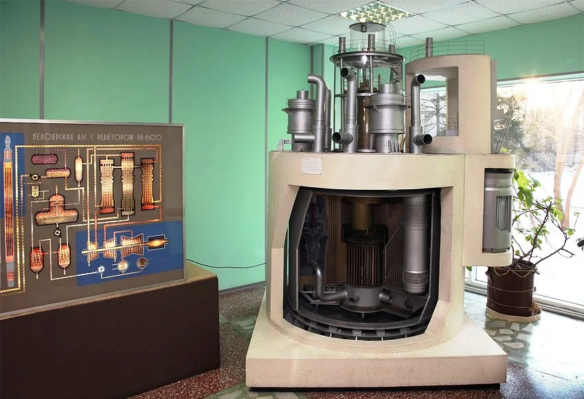
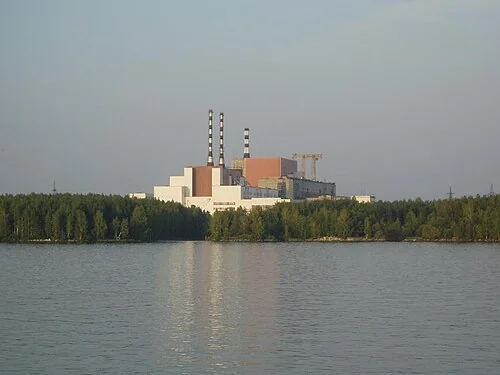
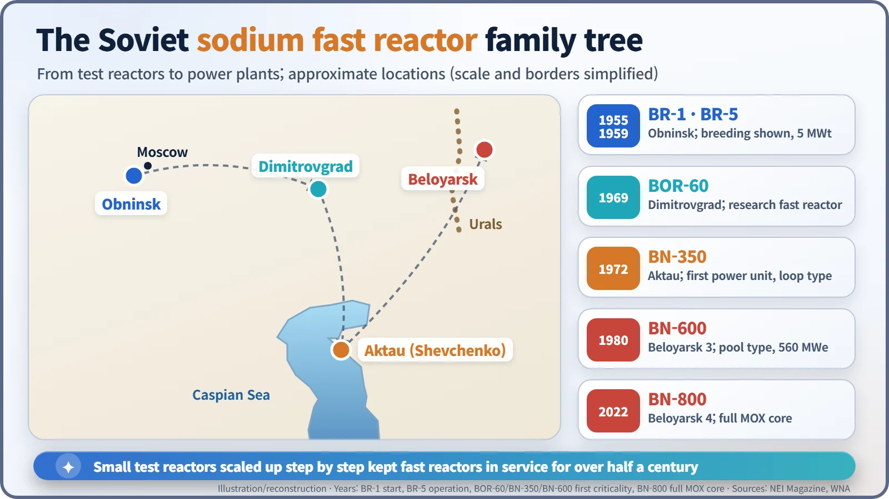

Nuclear History · 213
Called 350, Delivered 135 — BN-350 and BN-600, the Soviet Fast Reactors That Made Water in the Desert
The 350 in BN-350's name was an equivalent rating that counted heat and drinking water; its pool-type successor BN-600 is still producing electricity in the Urals.
BN-350, on the Caspian coast of Kazakhstan, was the Soviet Union's first power-producing fast reactor, and despite the "350" in its name it never delivered more than about 135 MW of electricity: most of its heat went into district heating and turning seawater into drinking water. Its successor, BN-600 at Beloyarsk in the Urals, first went critical in 1980 and is still operating, licensed to 2040.
Called 350, delivered 135
BN-350. The name suggests a 350-megawatt power station. Yet according to the World Nuclear Association (WNA), the reactor never sent more than about 135 megawatts of electricity to the grid. So where did the rest go? Into the water mains and heating pipes of a desert city on the eastern shore of the Caspian Sea. This reactor's main product was not electricity. It was water. [1] [2]

What the "350" really means
Russian-language sources describe the 350 as an equivalent electrical rating. It adds 150 MW of electricity to 100 MW of heat for district heating and 100 MW of heat for desalination (turning seawater into fresh water), with the heat counted as if it were electricity. The electricity figure itself varies by source, from 130 to 150 MW. About 60% of the reactor's heat went to heating and desalination, so the number in the name is closer to "everything this reactor did for its city" than to its electrical output. [1] [7]

Fast neutrons instead of slow ones
Most reactors slow their neutrons down before using them. A fast reactor keeps them fast. Fast neutrons can turn uranium-238, which barely burns in ordinary reactors, into plutonium, so a well-designed fast reactor can, in principle, produce more fuel than it consumes: a "breeder". Because water would slow the neutrons, these reactors are cooled with liquid sodium instead.
In the Soviet Union this path was led by the physicist Aleksandr Leypunsky (1903–1972), scientific head of the fast-reactor programme from 1950. The Institute for Physics and Power Engineering (IPPE) in Obninsk still carries his name. The programme grew in careful steps: BR-1 confirmed plutonium breeding experimentally in 1955, the 5-megawatt BR-5 started operating in 1959, and the BOR-60 research fast reactor at Dimitrovgrad reached criticality in 1969. [5] [6]
A boiler for a city with no river
The next stage was the Mangyshlak Peninsula on the Caspian's eastern coast. The city now called Aktau, in Kazakhstan, was named Shevchenko from 1964 to 1992. It sat by the sea, but drinking water was scarce. Construction of BN-350 began in October 1964 (Russian sources say 1966). The reactor reached criticality, a self-sustaining chain reaction, in November 1972 and began supplying power on 16 July 1973. Leypunsky did not see it: he had died a few months earlier, in August 1972.
BN-350 was designed for 1,000 megawatts of heat (MWt) but was run at no more than 750 MWt. Its own share of fresh water was about 80,000 cubic metres a day, and the whole desalination complex, which also used oil- and gas-fired boilers, could produce 120,000 cubic metres a day, according to the WNA. It was a "loop-type" design, in which sodium travels through pipe loops outside the reactor vessel. [1] [2]
BN-600: the whole thing in a tank
BN-350 served as the prototype for a full-scale power reactor: unit 3 of the Beloyarsk plant in the Urals, BN-600. Construction started in 1969; it reached first criticality on 26 February 1980, connected to the grid on 8 April 1980 and entered commercial operation in November 1981. It produces 1,470 MWt of heat and 600 MW of electricity gross (560 MW net). [3]

According to a presentation by an IPPE researcher, what fundamentally set BN-600 apart from earlier Soviet fast reactors was its pool-type layout: the primary sodium sits in one large tank, with the heat exchangers inside it, so radioactive sodium does not have to travel out of the vessel. Steam is raised in three external steam generators, which drive three 200-MW turbines. [4] [7]
It was not trouble-free. The same presentation reports 27 sodium leaks and 14 sodium fires during the early years of operation, plus 12 water-to-sodium leaks in the steam generators at the start. Other tallies give different numbers depending on what is counted. The steam generators were divided into modules, so a leaking section could be isolated and repaired, and the presentation says there were no further leaks for many years afterwards. According to the WNA, by late 2011 BN-600 had produced 114 terawatt-hours in 30 years, a capacity factor of about 76%, and it is now licensed to run until 2040. [4] [8]

One stopped, one kept going
BN-350's design life ran out in July 1993. After the Soviet Union broke up, money for fuel was short, and its output swung sharply up and down in the mid-1990s. Its official permanent shutdown came on 22 April 1999 (some sources say mid-1999 or 2000). The U.S. National Nuclear Security Administration (NNSA) states that the Soviet Union also used the reactor to produce plutonium for weapons, which made its spent fuel a security concern. In 2009–10, about 3,000 fuel assemblies containing roughly 3 tonnes of plutonium were moved, under U.S. supervision, in 12 rail shipments over about 3,000 km to a storage facility at Semipalatinsk. [1] [2]
BN-600, by contrast, is still running. Next door, unit 4, BN-800, has operated since September 2022 with a core made entirely of mixed plutonium-uranium oxide (MOX) fuel. [5]

Fast reactors were long called "the reactors of the future". In the Caspian desert one made drinking water, and in the Urals another has been making electricity for almost half a century. Even the number in a reactor's name can tell you what it was really for.